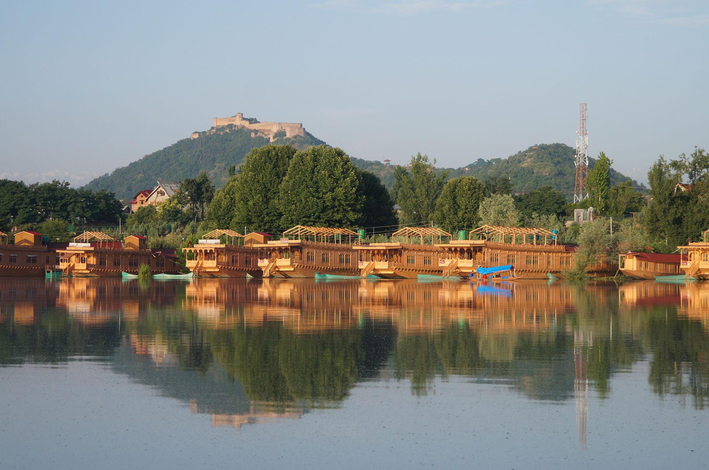

For Couples
Honeymoon Package
Scenic stays with a relaxed pace across Srinagar, Gulmarg and Pahalgam.
Discover Srinagar, Gulmarg, Pahalgam, and Sonmarg with a custom Kashmir holiday package. We arrange hotels, private transfers, Gondola planning, sightseeing, and direct local support for couples, families, and groups.
For Couples
Scenic stays with a relaxed pace across Srinagar, Gulmarg and Pahalgam.

For Families
Comfortable travel with balanced sightseeing and family-friendly pacing.

For Active Travellers
Mountain views and outdoor experiences planned around availability and conditions.

For Premium Stays
Requested higher-category stays and private arrangements confirmed by quote.

Winter Travel
Winter scenery and Gulmarg plans. Snowfall and road access are never guaranteed.

For Friends & Groups
Shared transport and flexible group sightseeing planned around confirmed availability.
Get a quick WhatsApp message prepared with your preferred style, dates, travellers and destinations. No payment or booking commitment is required.
Compare honeymoon, family, adventure, winter, luxury or custom routes.
Tell us guest count, dates, pace, hotel category and destinations you want to visit.
Review the dates, occupancy, meals, transport, sightseeing, exclusions and availability before confirming.
Use these routes as a starting point. Final duration, hotel category, room occupancy, meals, transport and activities are confirmed in a written quotation for your dates.
For Couples
Typically 5 days / 4 nights, paced around scenic stays and couples' interests.
View HoneymoonFor All Ages
Typically 6 days / 5 nights, with a comfortable pace and family-oriented coverage.
View Family TourFor Active Travel
Typically 5 days / 4 nights, focused on trekking and outdoor experiences.
View AdventureFor Snow Season
Typically 4 days / 3 nights, centred on winter scenery and Gulmarg. Snowfall is not guaranteed.
View Winter TourFor Premium Stays
Typically 5 days / 4 nights, with requested higher-category stays and private arrangements.
View LuxuryFor Your Route
Adjust duration, destinations, pace, accommodation and transport around your travel plan.
Request a Custom QuoteSeasonal conditions vary each year. Use this guide for planning, then check current weather, road access and destination operations before booking.
March-May
Flowering gardens, pleasant sightseeing and gradually warmer valley temperatures.
June-August
Accessible meadows, sightseeing, treks and a popular school-holiday travel period.
September-November
Clear scenery, autumn foliage and a quieter pace for photography and relaxed holidays.
December-February
Snow activities and cold-weather scenery; snowfall and road access cannot be guaranteed.
Gulmarg Gondola
Official Gulmarg Gondola tickets must be booked through the Jammu and Kashmir Cable Car Corporation's authorized portal. Ticket availability, weather interruptions and maintenance are controlled by the official operator.
Build your holiday around the places and experiences that matter most to you. Our local team combines the classic Kashmir route with practical advice on weather, travel time, hotels, and mountain activities.
Explore Kashmir PackagesChoose a short 4-day escape or a relaxed 7 to 10-day itinerary covering more valleys and experiences.
Combine Srinagar, Gulmarg, Pahalgam, and Sonmarg with an itinerary paced around your arrival and departure times.
Select hotels, resorts, or a traditional Dal Lake houseboat across budget, deluxe, and luxury options.
Get airport transfers, private vehicles, local sightseeing coordination, and help with Gondola planning.
Day 1-2
Dal Lake, Shikara rides, Mughal gardens, old-city heritage, and houseboat stays.
Day 3
Gondola rides, mountain views, skiing in winter, and alpine walks in summer.
Day 4-5
Lidder River scenery, Betaab Valley, Aru Valley, and Baisaran meadows.
Day 6+
Glacier viewpoints, highland landscapes, and extra days for slower, more scenic travel.
An exhaustive local travel handbook curated by local tourism experts. Discover the seasons, transport systems, cultural highlights, and honeymoon/family guides to planning your trip to Jammu & Kashmir.
Jammu and Kashmir is a region that holds an almost mythical place in the hearts of travelers worldwide. Known historically as the "Paradise on Earth," the Kashmir Valley is bounded by the snow-capped peaks of the Pir Panjal and Great Himalayan mountain ranges. This unique geographic placement grants it a temperate alpine climate, lush coniferous forests, and a network of pristine lakes, rivers, and high-altitude streams.
A trip to Kashmir is a rich cultural experience. The region features historic Mughal gardens, quiet lake settlements, pine valleys, and high-altitude passes. From Srinagar, the summer capital, to the snowy valleys of Gulmarg and Pahalgam, Kashmir tourism provides a range of activities. Whether you are looking for relaxation on a traditional houseboat, ski runs on fresh snow, or scenic walks, this guide will help you plan your journey.
For centuries, this valley has inspired poets, emperors, and modern adventurers. The unique blend of Central Asian, Persian, and Indian cultural influences is visible in local architecture, music, crafts, and food. When you book a Kashmir tour package, you are not just booking a vacation; you are stepping into a centuries-old heritage of hospitality.
Unlike typical mountain stations, the Kashmir Valley features wide flat plains surrounded by snow-clad peaks, mirroring alpine valleys in Switzerland. Lakes like Nigeen, Dal, and Gangabal showcase clear mountain reflections.
Staying in wood-carved cedar houseboats on Nigeen or Dal Lake is a unique lodging experience. These stationary houseboats date back to the British era and feature vintage Persian rugs and local woodwork.
The hospitality in J&K is a core part of the local lifestyle. Known locally as "Mehman Nawazi," travelers are welcomed warmly by houseboat hosts, mountain pony pullers, and local handicraft weavers.
Kashmir stands out because it offers a variety of experiences in close proximity. You can start your day floating in a wooden Shikara on a peaceful lake, and by afternoon, take the Gulmarg Gondola up past 13,000 feet to stand on deep glaciers. The sensory contrast is unique: from saffron fields in Pampore to the rushing cold waters of the Lidder River in Pahalgam.
Kashmir is a year-round destination, but the best time for your visit depends on what you want to experience. While spring and summer are popular for family holidays, winter draws ski enthusiasts and couples looking for snow. Below is a detailed breakdown of the seasons to help you choose.
Temperatures range from 10°C to 20°C. Spring brings blooming almond blossoms, mustard fields, and the Tulip Festival in Srinagar. The gardens are full of seasonal flowers, making it a great time for sightseeing and photography.
Temperatures range from 15°C to 30°C. High-altitude meadows in Gulmarg, Sonmarg, and Pahalgam are fully open. This is a popular season for family tours, trekking, and taking night cruises on Dal Lake houseboats.
Temperatures drop to 10°C to 18°C. Chinar tree leaves turn deep gold, orange, and copper. This is a quiet, dry season, ideal for photographers, honeymooners, and viewing saffron harvesting in Pampore.
Temperatures range from -5°C to 8°C. Gulmarg and Pahalgam receive heavy snowfall, turning the mountains into ski slopes. Winter is popular for snow sports and romantic winter stays with active heating.
By Air: Sheikh-ul-Alam International Airport in Srinagar (SXR) is located about 12 km from the city center. It has regular direct flights to New Delhi, Mumbai, Bangalore, Jammu, and Amritsar.
By Rail: Srinagar is connected to the wider Indian railway network through the Udhampur–Srinagar–Baramulla Rail Link (USBRL). The Katra–Srinagar corridor is operational, while direct long-distance trains from every other Indian city should not be assumed. Travellers may need to change trains or continue by road at stations such as Jammu Tawi or Katra. Check current routes, schedules and connections with Indian Railways before travel. The operational Vande Bharat Express service also connects Jammu Tawi and Srinagar. Travellers arriving from other Indian cities may need a connecting train to Jammu Tawi or Katra before continuing to Srinagar. Schedules and services can change, so check the official Indian Railways train information system before travel.
By Road: The NH-44 highway connects Srinagar to Jammu. The road features modern tunnels like the Chenani-Nashri and Banihal Qazigund tunnels, which help make winter travel more reliable.
Local transportation in Kashmir is subject to regional taxi union regulations. Outside or non-union vehicles are generally allowed to drop travelers off at hotels but are restricted from local sightseeing points in Gulmarg, Sonmarg, and Pahalgam.
For key sightseeing spots like Betaab Valley in Pahalgam or Thajiwas Glacier in Sonmarg, you will need to rent a local union vehicle. Northwind Kashmir assists in organizing pre-arranged union drivers to save you wait times and ensure smooth transit.

Dating back to the late 19th century when the British ruled India, houseboats were built to bypass local land ownership laws. Today, these stationary wooden boats are high-quality tourist accommodations. They are hand-constructed from cedar wood (Devdar), which naturally resists rot, and feature geometric ceiling carvings known as Khatamband.
Dal Lake vs Nigeen Lake: Dal Lake is busy and central, filled with passing Shikaras and floating markets. Nigeen Lake is quieter and bordered by willow trees, making it a good choice for travelers looking for a peaceful stay. All houseboats offer private bedrooms, attached baths, hot water, and a front veranda for viewing lake sunrises and sunsets.
Kashmir is a classic choice for honeymoons in India. Suggested experiences for couples include:
Kashmir is well-suited for family vacations, offering activities that appeal to all age groups:
For travelers looking for comfort and premium service, Kashmir offers high-end options:
Kashmir's terrain makes it a key location for adventure sports and trekking in Northern India. Here are the top adventure activities:
Kashmiri cuisine is influenced by Central Asian and Persian traditions. Key culinary elements include:
Planning a tour? Speak directly with a Kashmir travel specialist.
Discuss itinerary options, hotel advice and custom packages on WhatsApp.
Discover the unique highlights of each region, perfectly integrated into our customized Kashmir tour packages.
Experience the timeless charm of Srinagar. Stay on hand-carved cedar houseboats on Nigeen or Dal Lake, float through historic canals, and watch sunrise floating markets. Walk the terraced pathways of Nishat Bagh and Shalimar Bagh, visit ancient stone temples, and explore carpet-weaving heritage centers.
Explore Gulmarg, the Meadow of Flowers. Ride the high-altitude Gulmarg Gondola up to Apharwat Peak at around 3,980 meters for panoramic Himalayan views. Enjoy powder skiing in the winter months, golf in pristine valleys, and relax in luxurious mountain lodges.
Escape into Pahalgam's peaceful pine valleys. Walk along the banks of the Lidder River, visit Betaab Valley (named after the Bollywood hit), explore Aru Valley, and hike or ride horses to Baisaran Meadow (Mini Switzerland). Perfect for hiking, angling, and peaceful family retreats.
Discover the Meadow of Gold, Sonmarg. Experience mountain views, go trekking to Thajiwas Glacier, and take pony rides across deep snowfields. Walk along the river paths of the Sindh River and take in high-altitude glacier valleys at the gateway to the ancient Silk Road.
Celebrate your new journey in paradise. Indulge in romantic stays featuring decorated bedrooms, candlelit dining, private floating cruises on Dal Lake, professional photoshoots in alpine valleys, and custom slow pacing through the scenic meadows of Gulmarg and Pahalgam.
Enjoy the finest mountain travel experience. Stay at 5-star mountain resorts such as The Khyber in Gulmarg, travel in premium private 4x4 SUVs driven by expert chauffeurs, and access private dining, premium checks, and responsive local travel assistance assistance.
Ready to book your holiday package?
Contact us to customize your flight bookings, premium hotels, and customized local routes.
Compare packages, understand the cost, choose your route, and explore practical guides before you contact our local travel team.
Compare custom Kashmir holidays for couples, families, groups, and luxury travellers.
Explore packages →Understand budget, deluxe, and luxury price factors, inclusions, and exclusions.
Check cost guide →Find skiing, snowboarding, snowmobile rides, sledging, and snow play options.
See activities →Plan snow stays, heated hotels, winter transport, and seasonal sightseeing.
Explore winter trips →Learn about ticket planning, Phase 1, Phase 2, timings, weather, and gear.
Read Gondola guide →Browse hotel, resort, and houseboat options for Srinagar, Gulmarg, Pahalgam, and Sonmarg.
Browse hotels →We provide Kashmir itinerary and local coordination support based on options confirmed for your selected travel dates.
We can request hotel, houseboat and transport options based on your itinerary. Facilities, rates and availability should be confirmed for the selected dates before booking.
Local drivers and guides may be requested according to the route and availability. Credentials, experience and charges are explained before inclusion.
We are based locally in Kashmir. Availability for itinerary questions and confirmed arrangements should be checked by phone or WhatsApp.
Northwind Kashmir is a local Kashmir travel-planning service. We provide carefully coordinated travel arrangements for guests based on confirmed availability. Learn more on our About page.
Before Booking
Review a Written Quotation
Kashmir
Local Experts, On Ground
Tailored
Custom Itineraries for Every Trip
Direct
Talk to Us, Not a Call Centre
Tangmarg
Based in the Heart of Kashmir
Get all the essential details about your Kashmir holiday from our local travel experts.
The best season depends on your plans: spring is good for gardens, summer for accessible meadows, autumn for clear scenery and winter for snow activities. Conditions vary by year and destination.
Snowfall is weather-dependent and cannot be guaranteed for a particular date. Check current forecasts and local advisories before travelling to high-altitude destinations.
Use the official J&K Cable Car Corporation ticket portal. Northwind Kashmir can help with itinerary and transport planning, but does not own or operate the government Gondola service.
Airport pickup can be requested as part of a customised itinerary. Vehicle type, timing and price are confirmed for your dates before booking.
We can suggest and request hotel options based on your route and budget. Facilities, rates and availability must be confirmed with the property for your dates.
Yes. Routes, pacing, room preferences and activities can be discussed for a family, honeymoon or private trip. Final inclusions depend on the confirmed itinerary.
Available payment methods and any advance required are explained in the quotation. Confirm payment details directly with Northwind Kashmir before transferring funds.
Cancellation and refund terms vary by hotel, transport provider, Gondola ticket and package. They are shared with the booking confirmation; ask for the applicable terms before paying.
Travel time depends on the route, traffic and road conditions. Allow rest breaks and avoid an itinerary that spends most of the day driving.
A final quotation should state duration, occupancy, hotel category, meal plan, transport, listed sightseeing, excluded activities, taxes where known and applicable cancellation terms.
Family itineraries can be paced around age and mobility, but high-altitude destinations may require additional caution. Discuss medical considerations and travel comfort before booking.
Send an inquiry on WhatsApp or call us to discuss routes, pacing and hotel options. Availability and final inclusions will be confirmed in a written quotation.